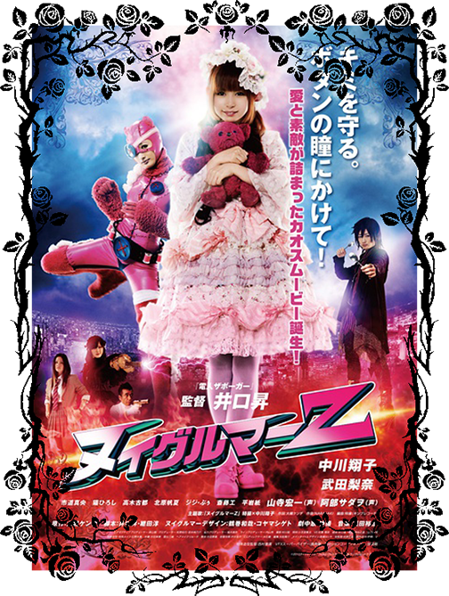
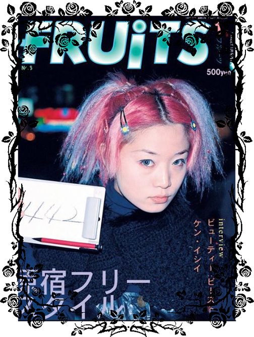

What's in the Media?
Over the years, there has been many cases of Lolita fashion in the media. There are also a number of magazines, flim and tv, video content, and literature that is intended to
cater towards the Lolita.
Movies

Shimotsuma Monogatari / Kamikaze Girls (2004 movie)
Mr. Rococo (2010 short film)
Psycho Gothic Lolita (2010 movie)
Nuiguruma Z / Gothic Lolita Battle Bear (2013 movie)
Musashino-sen no Shimai / Sisters of Musashino Line (2007 movie)
X-Cross (2007 movie)
T.V. & Documentaries
Deka Wanko (TV drama)
Cat Street (TV drama - Momiji, the character wears Lolita)
Sugar Coated (documentary) VIDEO
Hijab Lolita Fashion in Japan and Abroad (documentary) VIDEO
Manga
Alichino by Kouyu Shurei
Antique Romance by Mi-Jung Kimi
Chocolat no Mahou (ショコラの魔法) by Rino Mizuho
DOLL: IC in a Doll by Mitsukazu Mihara
Paradise Kiss by Yazawa Ai
KISSxxxx by Kusomoto Maki
Kakei no Alice (架刑のアリス) by Kaori Yuki
Under the Rose (アンダーザローズ) by Akari Funato
Old Print

More Websites
Youtube